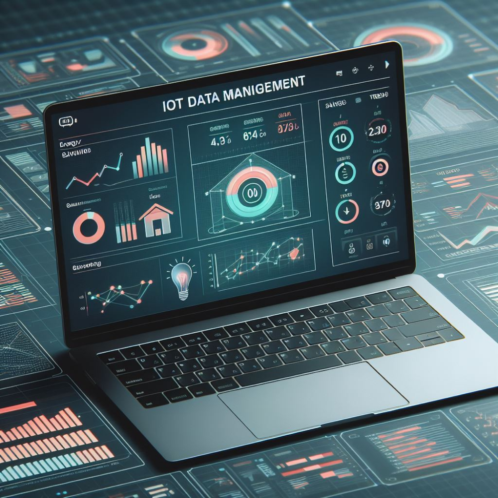
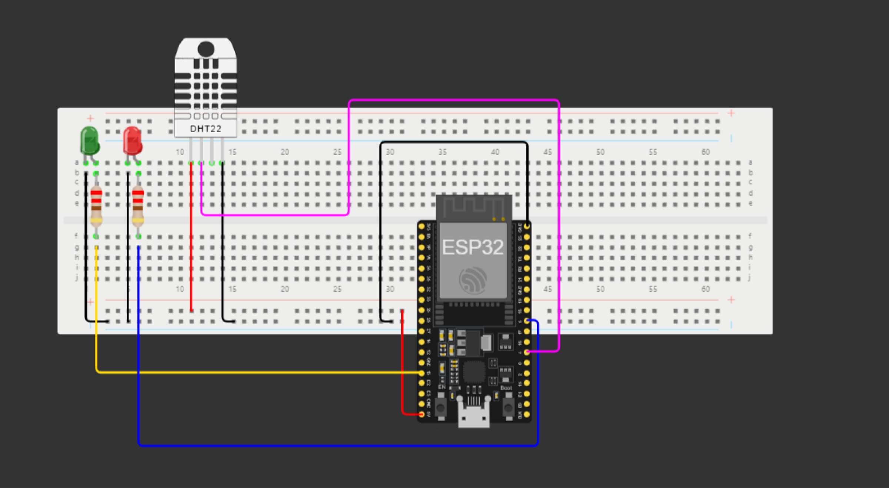

IoT data management is the process of collecting, storing, processing,
and analyzing data from IoT devices. IoT data management can help
businesses improve efficiency, productivity, and profitability by
automating and optimizing processes, generating insights from data,
and reducing costs. However, IoT data management also poses unique
challenges, such as coping with scale and storage, ensuring secure
data transfer, and transforming raw data into actionable solutions.

Assessment objectives covered in this section
Use IOT to get NodeMcu information and then control NodeMcu;
Monitoring temperature and humidity levels can aid in climate
observation, especially in projects related to climate monitoring or
indoor environmental control.
By enabling remote monitoring of environmental parameters, it can
contribute to efficient resource utilization, like energy for
climate control systems based on real-time data.
Our Project is a remote environmental monitoring system that utilizes
an ESP32 microcontroller board along with a DHT11 sensor for
temperature and humidity measurements and two LESs. This project
leverages Wi-Fi connectivity and MQTT communication to interact with
the Adafruit IO platform.
"IoT EnviroMonitor" enables users to remotely monitor temperature and
humidity levels in a designated area. The system connects to the
Adafruit IO MQTT broker over Wi-Fi, allowing real-time data
transmission and reception. Users can control the state of the DHT11
sensor remotely through incoming messages from the Adafruit IO
platform.Also LEDs indicate the Sensor activity for physical users.
Red Indicates the OFF mode of sensor. and GREEN light indicates the
sensoris active.
This project not only facilitates the collection of environmental data
but also offers the capability to remotely manage the sensor's
operational state. By integrating IoT technologies, it contributes to
applications in climate monitoring, indoor environmental control, and
remote sensing, aligning with initiatives related to environmental
sustainability and technological innovation.
Required Components
ESP32 - NODEMCU
2 - LEDs.
2 - 220 ohm Resistors.
Jump Wires.
DHT11 temperature and humidity sensor.
Bread Board.
IOT Cloud Account ( in this case Adafruit IO)
Wire Diagram

CODE DEVELOPMENT
Libraries and Definitions
This section includes the inclusion of necessary libraries (WiFi.h,
Adafruit_MQTT.h, AdafruitIO_WiFi.h, DHT.h) and defines several
constants such as Wi-Fi credentials (WLAN_SSID, WLAN_PASS), Adafruit
IO server details (AIO_SERVER, AIO_SERVERPORT, AIO_USERNAME, AIO_KEY),
DHT sensor pin (DHTPIN), type (DHTTYPE), and LED pins (RED_LED_PIN,
GREEN_LED_PIN).
Global Object Initialization
This part initializes global objects and variables required for the
Wi-Fi client, MQTT client, MQTT publishing instances for temperature
and humidity, Adafruit IO connection, DHT sensor, and Adafruit IO feed
named "wdb".
Wi-Fi and MQTT Connection Setup
These functions (connectWiFi(), MQTT_connect(), and setup()) establish
the Wi-Fi connection, MQTT connection to Adafruit IO, and initialize
hardware settings. connectWiFi() connects to Wi-Fi using provided
credentials, MQTT_connect() maintains the MQTT connection to Adafruit
IO, and setup() initializes pins, connects to Wi-Fi and Adafruit IO,
and subscribes to the "wdb" feed.
Handling Incoming Messages
handleWdbMessage() is a callback function that is triggered upon
receiving messages on the "wdb" feed from Adafruit IO. This function
processes the incoming data to control the state of the DHT sensor and
LEDs. The loop() function maintains the MQTT connection, checks for
incoming MQTT messages, reads sensor data, and publishes it to
Adafruit IO feeds.